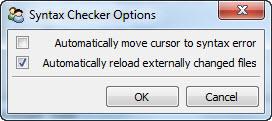

Defines a tool that performs syntax checking on an input Python source file.
The Python source file to be syntax checked can be specified either by connecting a Python source file name to the tool’s file_name input or by dropping the source file onto the drop icon on the tool’s feature toolbar.
Using the options dialog available from the tool’s feature toolbar, you can set up the tool to automatically position the cursor at the first syntax found in the current input source file. You can also configure the tool to automatically reload the source file any time the file is changed, which can be handy when using an external text editor to correct errors found by the tool.
If automatic cursor positioning is turned off, you can click the Go To button located in the lower right hand corner of the tool’s view to update the cursor position to the most recently found error.
facets.extra.tools.syntax_checker
None.
In addition to its input connections, the syntax checker tool also supports setting the following facets through the tool’s options dialog available via the tool’s feature toolbar:
The view tester tool displaying a syntax error in a source file.
The syntax checker tool’s options dialog.